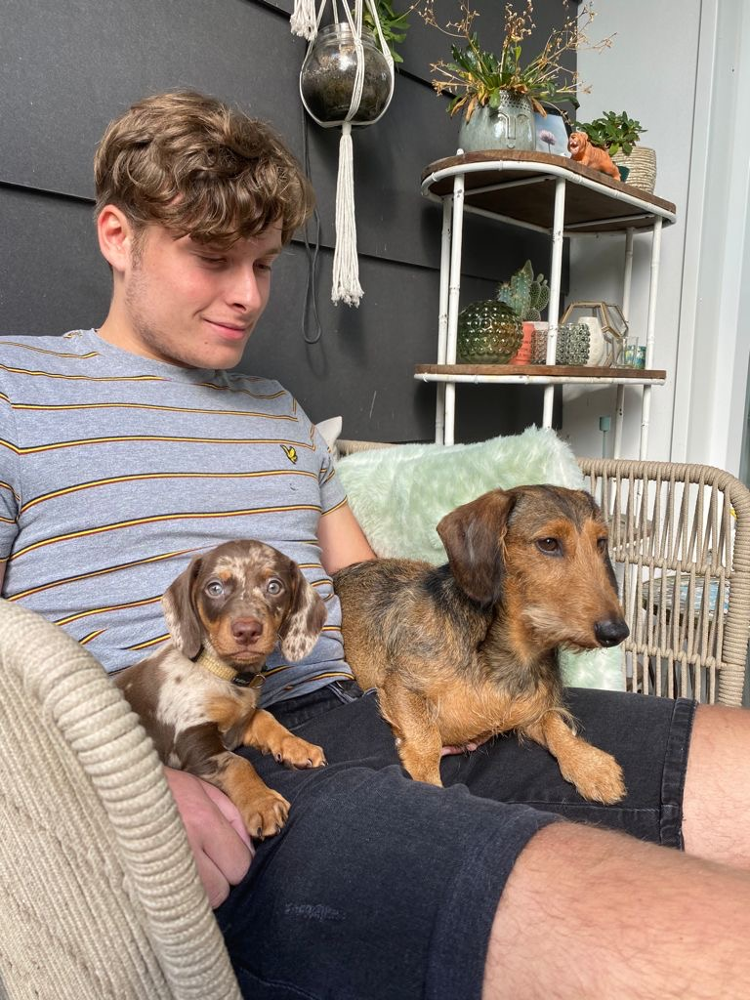

Wie ben ik?
Ik ben Lucas Jansen, ik ben 18 jaar oud.
Waar woon ik?
Ik woon in 's Gravenpolder, het is een dorp op ongeveer 5km afstand van Goes.
Ik woon nog thuis met mijn ouders en ook met mijn tweelingzus en kleine zus van 10 jaar oud.
Mijn hobbies zijn:
Zwemmen, mountainbiken, gamen en met vrienden afspreken, of dit nu is voor een feestje of online.
- De games die ik vooral speel zijn:
- Rocket League
- CSGO
- GTA V